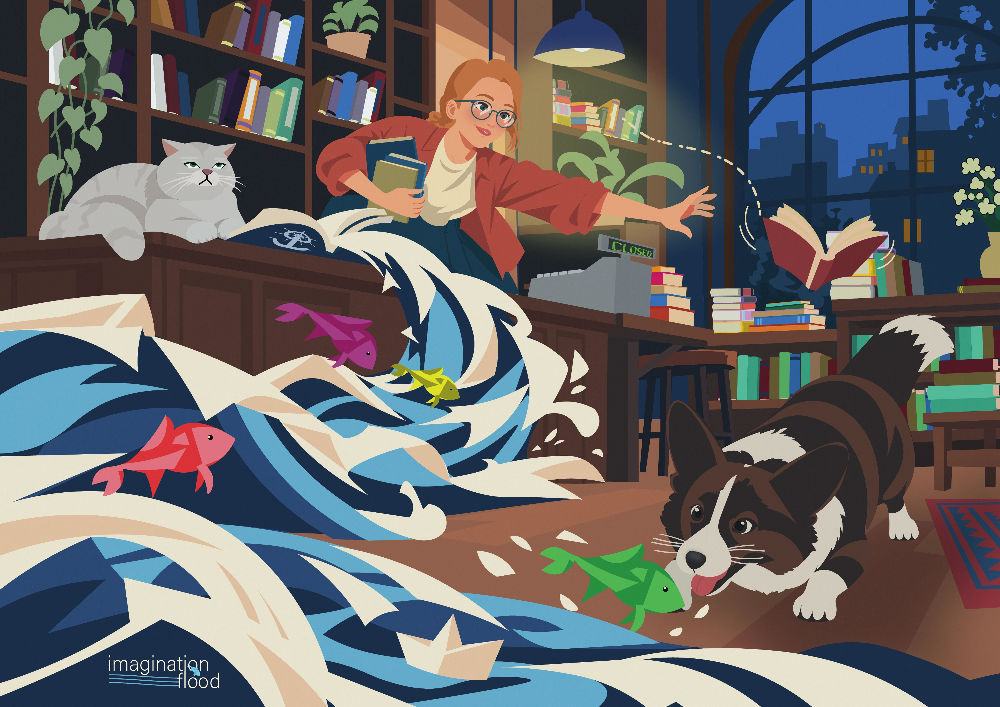
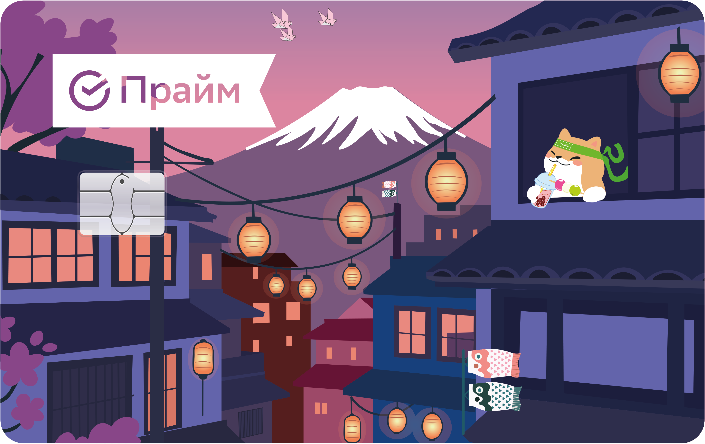
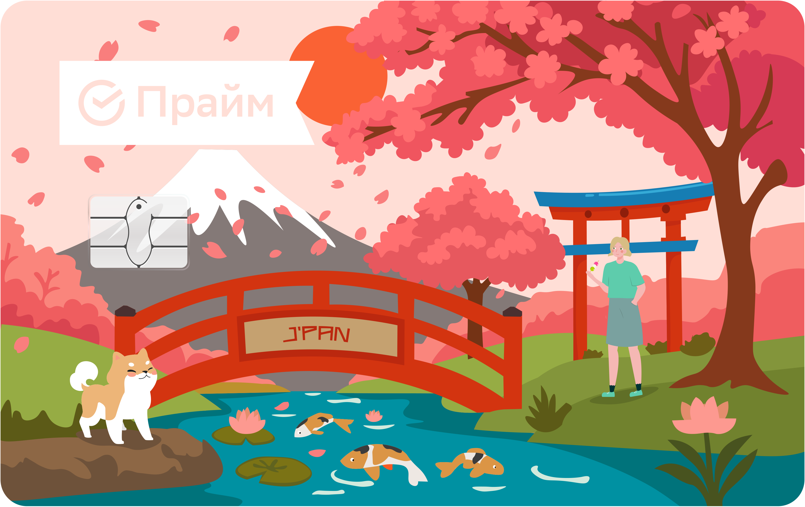
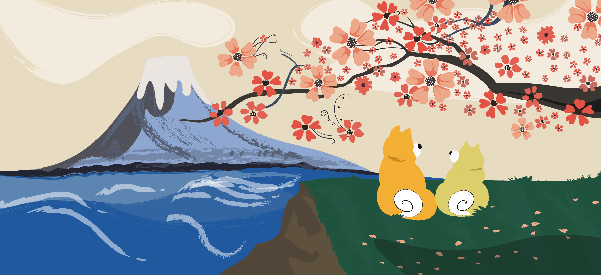
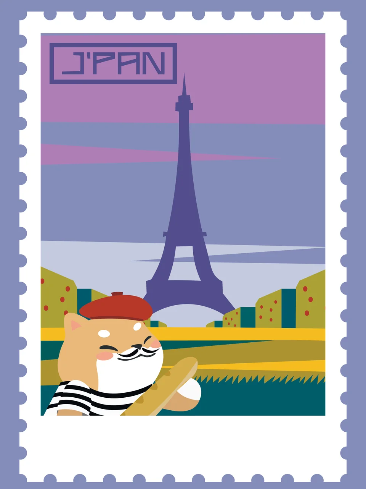
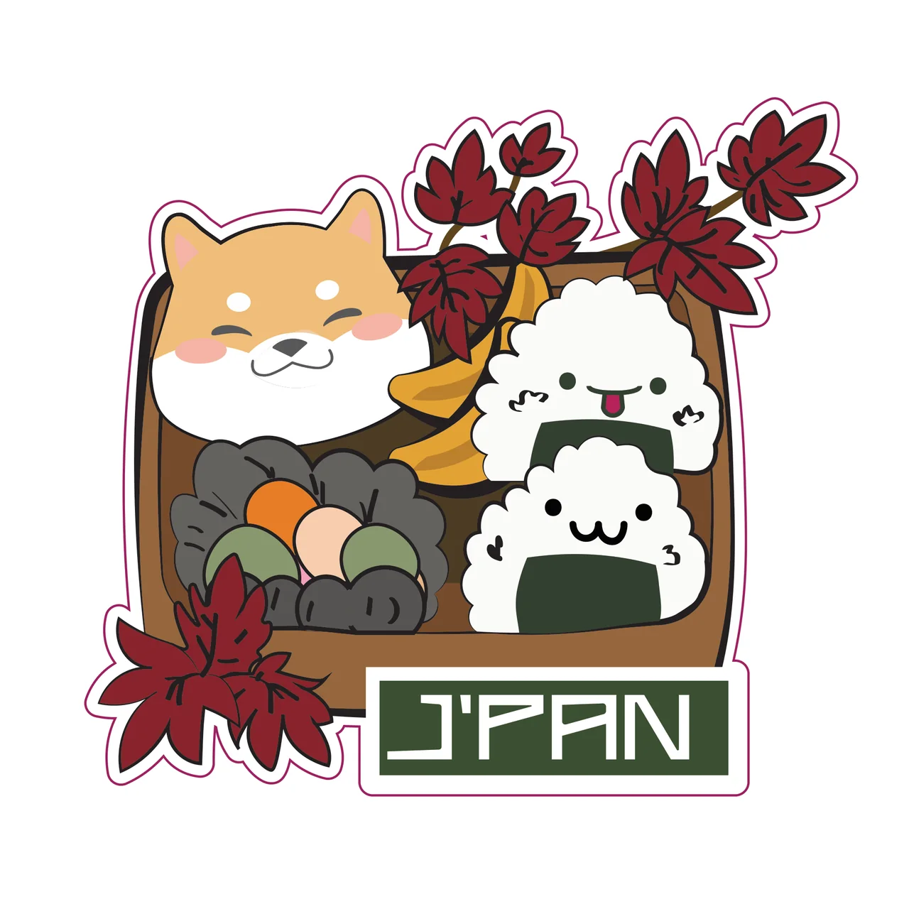
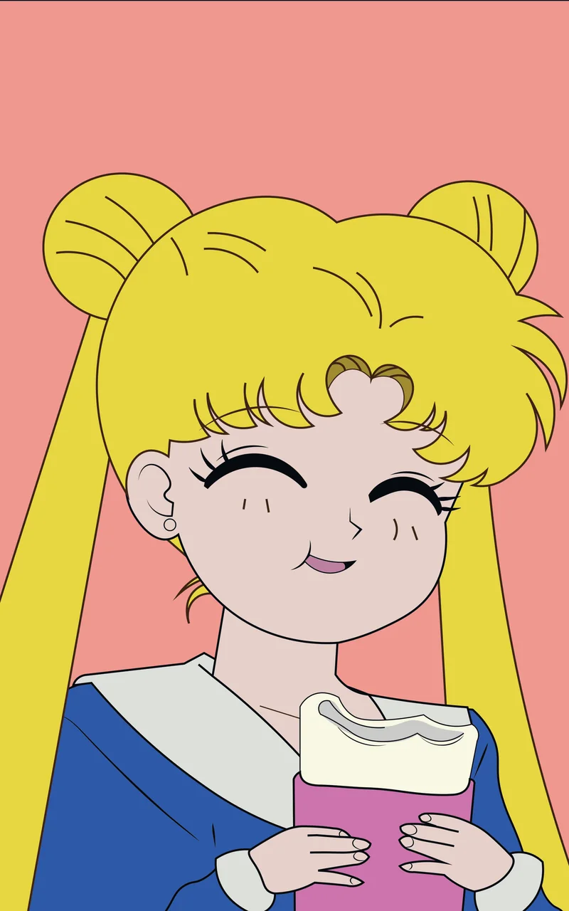
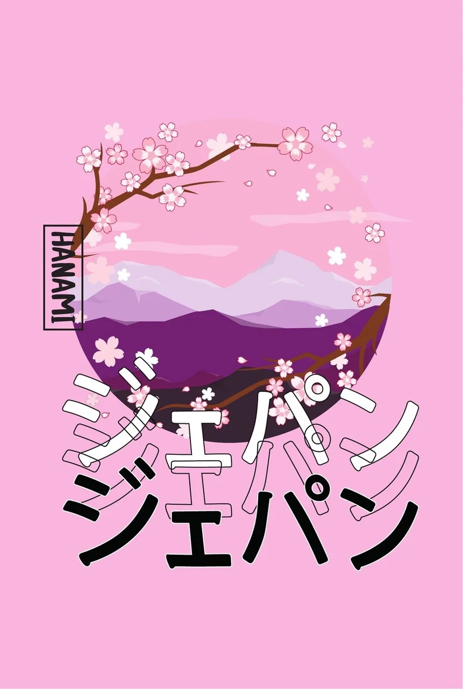
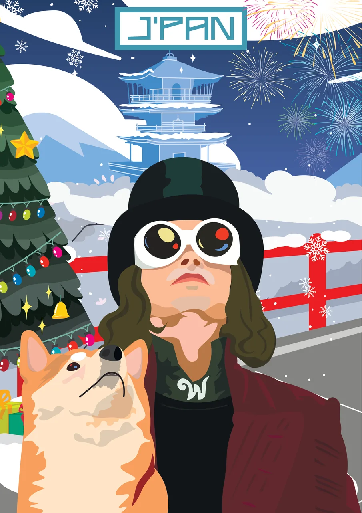

Imagination Flood
Личная сюжетная иллюстрация
Книжный магазин, где из раскрытых страниц выплёскивается море.
Рисую персонажей и сюжетные иллюстрации.

Личная сюжетная иллюстрация
Книжный магазин, где из раскрытых страниц выплёскивается море.
Иллюстрации для банковских карт
Две иллюстрации из пяти вышли на картах СберПрайм.

Ночная улица
Сад с сакурой Оборот
Оборот
Обложки для J’PAN
Истории с сиба-ину на лицевой и оборотной стороне меню.

Иллюстрация для ресторана J’PAN
Весенняя панорама, напечатанная для интерьера ресторана.

Кухни мираИллюстрации в формате марок
СтикерыСезонные наборы для J’PAN Графический дизайнВёрстка и типографика
Графический дизайнВёрстка и типографика

Сэйлор МунСерия иллюстраций для J’PAN
ХанамиПринты для фестивального мерча
Другие иллюстрацииИллюстрации для J’PANПривет! Меня зовут Сергей и я иллюстратор...
Я графический дизайнер-иллюстратор.
Создаю авторские векторные иллюстрации, рисую персонажей и сюжетные серии. За 3,5 года в J’PAN предложил и реализовал формат двусторонних обложек меню, который ресторан использует до сих пор. Мои иллюстрации для коллаборации J’PAN × СберПрайм вошли в выпущенную серию банковских карт.
Разрабатываю визуальную концепцию с учётом задачи, брендбука и носителя. Подбираю композицию, цветовые решения и типографику, рисую в Adobe Illustrator и Photoshop. В полиграфическом дизайне выполняю вёрстку и допечатную подготовку по требованиям типографии. Адаптирую графику под разные форматы, сохраняя характер персонажей и стиль бренда. Уверенно работаю с ИИ и использую его для прототипирования.
Буду полезен команде, которой нужен самостоятельный дизайнер для создания оригинальной графики и подготовки материалов к выпуску. Могу взять на себя оформление меню, упаковки, стикеров и мерча целиком - от первой идеи до готового печатного макета. Дополнительно владею 3D-моделированием и могу подготовить персонажа к изготовлению. Например, мою модель маскота сиба-ину используют для формы ресторанного десерта.
Не рассматриваю работу, связанную с гемблингом, ставками, букмекерством, оружием и товарами двойного назначения с военным использованием, а также вакансии алкогольных и табачных компаний.
Макет для Instagram Spaffy, карточка товара для Ozon, вёрстка зимнего меню J’PAN и буклет для «Влаваше».
Макет для карусели Instagram о завершении темы «Проценты». Формат — 1080 × 1350 px.
Карточка товара для Ozon с инфографикой о геймпаде DualSense.
Вёрстка внутренних страниц зимнего меню J’PAN 2025 года: разделы с блюдами и напитками.
Двусторонний буклет А6 для промоутеров «Влаваше». На лицевой стороне — предложение комбо, на обороте — акция с пятой шавермой в подарок.
Два принта для футболок J’PAN, выпущенных к фестивалю Ханами.
Личная иллюстрация о книжном магазине, где книги оживают, а из раскрытых страниц выплёскивается море.
Иллюстрация для весеннего панно в ресторане J’PAN. По двум референсам заказчика объединил персонажей и окружение в общую композицию, выдержав заданную стилистику.
Четыре иллюстрации по мотивам Сэйлор Мун для J’PAN к 14 февраля. Серию использовали в промоматериалах, на стикерах и флажках для блюд.
Пять вариантов иллюстраций для банковских карт в коллаборации J’PAN и СберПрайм. Для выпуска выбрали ночную улицу и сад с сакурой. Ещё три варианта остались концептами.
Обложки для сезонных и праздничных меню J’PAN. В основе иллюстраций — истории с маскотом ресторана, сиба-ину.
Для первого осеннего меню предложил связать лицевую и оборотную стороны одним сюжетом. Сначала сиба-ину наслаждается пикником в кленовом лесу, затем наблюдает за закатом. Осенние клёны отсылают к момидзи. Предложенный мной формат истории на двух сторонах обложки ресторан сохранил и в последующих меню.
Сезонные наборы для J’PAN — к осени, Хэллоуину и 14 февраля. Стикеры дарили гостям, использовали в промо и включали в подарки к мероприятиям.
Серия иллюстраций в формате почтовых марок для ивента J’PAN, посвящённого кухням разных стран. Марки дарили гостям.
Иллюстрации для меню, фестивалей и стикеров J’PAN.